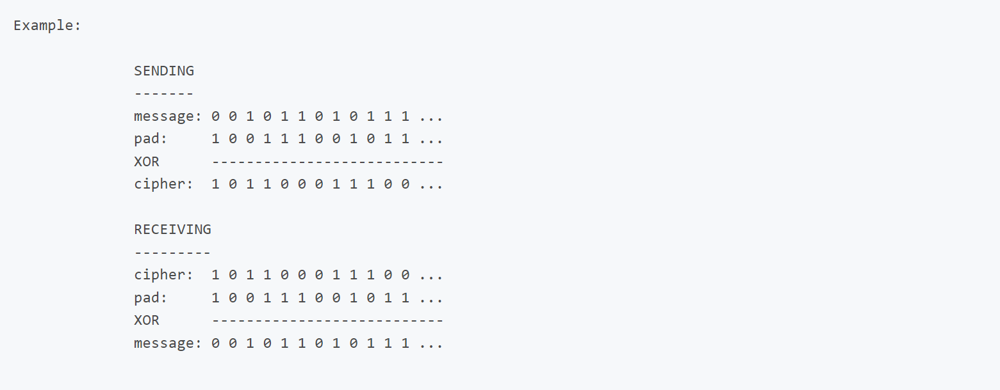

THEORY

Is Vernam cipher perfectly secure?
- The Vernam cipher is considered to be perfectly secure as it reveals no fingerprint. This is because each character is
encrypted using its own key.
- Even if the key comprises only letters, there are 26 options for each character of the plain text message. This means
that the message 'HELLO' would have 26, to the power 5, (11,881,376) possible representations, including all possible
five-letter words.
- If the Vernam cipher uses a random bitstream for the key, rather than using alphabetic characters, the number of
possible representations rises to 256, to the power n, (where n is the number of characters in the plain text).
- However, there are some additional rules that need to be applied to achieve perfect security:
- The characters in the key must be truly random.
- The key must be used once, and only once.
- There must be only two copies of the key (held by the sender and recipient) and the key must be secret to these parties
- The key must be destroyed after use.
- Most codebreakers exploit human weakness or laziness to crack ciphers. Key exchange is a significant problem when the
sender and receiver live in completely different places, such as on opposite sides of the world.